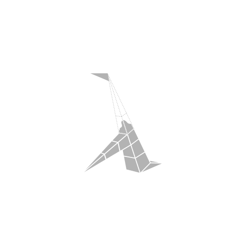
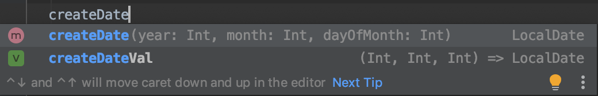
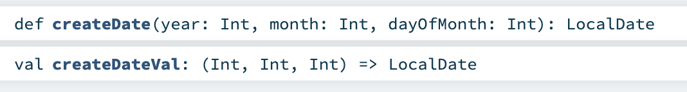

class: center, middle <a href="https://github.com/fp-tower/foundation"> </a> --- layout: true <div class="footer"> <a href="https://github.com/fp-tower/foundation">  </a> </div> --- class: center, middle # Val vs Def functions --- # Functions .pull-left[ ## Val function (Lambda) ```scala val replicate: (Int, String) => String = (n: Int, text: String) => ... ``` <br> ```scala replicate(3, "Hello ") // res1: String = "Hello Hello Hello " ``` ] .pull-right[ ## Def function (Method) ```scala def replicate(n: Int, text: String): String = ... ``` <br> ```scala replicate(3, "Hello ") // res3: String = "Hello Hello Hello " ``` ] --- # Val function (Lambda or anonymous function) <br> ```scala (n: Int, text: String) => List.fill(n)(text).mkString ``` --- # Val functions are ordinary objects <br> ```scala (n: Int, text: String) => List.fill(n)(text).mkString ``` <br> ```scala 3 "Hello World!" User("John Doe", 27) ``` --- # Val functions are ordinary objects <br> ```scala val replicate = (n: Int, text: String) => List.fill(n)(text).mkString ``` <br> ```scala val counter = 3 val message = "Hello World!" val john = User("John Doe", 27) ``` -- <br> ```scala val repeat = replicate ``` --- # Val functions are ordinary objects <br> ```scala val numbers = List(1,2,3) // numbers: List[Int] = List(1, 2, 3) val functions = List((x: Int) => x + 1, (x: Int) => x - 1, (x: Int) => x * 2) // functions: List[Int => Int] = List(<function1>, <function1>, <function1>) ``` -- <br> ```scala functions(0)(10) // res12: Int = 11 functions(2)(10) // res13: Int = 20 ``` --- # Val function desugared <br> ```scala val replicate: (Int, String) => String = (n: Int, text: String) => List.fill(n)(text).mkString ``` --- # Val function desugared <br> ```scala val replicate: (Int, String) => String = (n: Int, text: String) => List.fill(n)(text).mkString ``` <br> <br> ```scala val replicate: Function2[Int, String, String] = (n: Int, text: String) => List.fill(n)(text).mkString ``` --- # Val function desugared <br> ```scala val replicate: (Int, String) => String = (n: Int, text: String) => List.fill(n)(text).mkString ``` <br> <br> ```scala val replicate: Function2[Int, String, String] = new Function2[Int, String, String] { def apply(n: Int, text: String): String = List.fill(n)(text).mkString } ``` -- ```scala replicate.apply(3, "Hello ") // res19: String = "Hello Hello Hello " ``` -- ```scala replicate(3, "Hello ") // res20: String = "Hello Hello Hello " ``` --- # Def function (Method) <br> ```scala import java.time.LocalDate def createDate(year: Int, month: Int, dayOfMonth: Int): LocalDate = ... ``` <br> ```scala createDate(2020, 1, 5) // res21: LocalDate = 2020-01-05 ``` --- # Function arguments <br> ```scala import java.time.LocalDate def createDate(year: Int, month: Int, dayOfMonth: Int): LocalDate = ... ``` <br> ```scala val createDateVal: (Int, Int, Int) => LocalDate = (year, month, dayOfMonth) => ... ``` --- <br> ## IDE  ## Javadoc  --- # Named arguments <br> ```scala import java.time.LocalDate def createDate(year: Int, month: Int, dayOfMonth: Int): LocalDate = ... ``` <br> ```scala createDate(2020, 1, 5) // res23: LocalDate = 2020-01-05 ``` ```scala createDate(dayOfMonth = 5, month = 1, year = 2020) // res24: LocalDate = 2020-01-05 ``` --- # Def functions are not data <br> ```scala def createDate(year: Int, month: Int, dayOfMonth: Int): LocalDate = ... ``` <br> ```scala List(createDate) // error: missing argument list for method createDate in class App10 // Unapplied methods are only converted to functions when a function type is expected. // You can make this conversion explicit by writing `createDate _` or `createDate(_,_,_)` instead of `createDate`. // List(createDate) // ^^^^^^^^^^ ``` --- # Def functions are not data <br> ```scala def createDate(year: Int, month: Int, dayOfMonth: Int): LocalDate = ... ``` <br> ```scala List(createDate _) // res26: List[(Int, Int, Int) => LocalDate] = List(<function3>) ``` -- <br> ```scala val createDateVal = createDate _ // createDateVal: (Int, Int, Int) => LocalDate = <function3> ``` --- # Def functions are not data <br> ```scala def createDate(year: Int, month: Int, dayOfMonth: Int): LocalDate = ... ``` <br> ```scala List(createDate): List[(Int, Int, Int) => LocalDate] ``` <br> ```scala val createDateVal: (Int, Int, Int) => LocalDate = createDate ``` --- # Summary <br> .large[ * Val functions are an ordinary objects * Use def functions for API * Easy to convert def to val ]